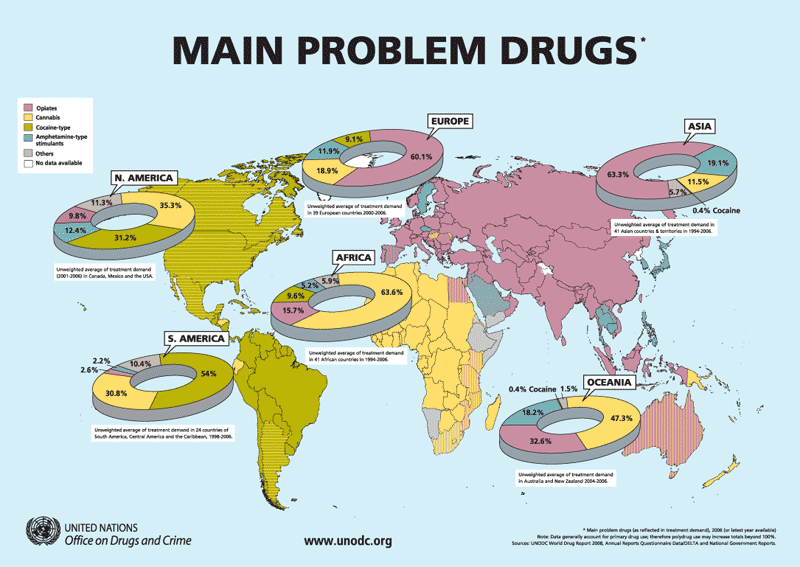

Countries handle substance abuse differently. How does your country handle it?
Australia's NDEP and CEIDA
Germany's 5-phased evolution
Malaysia's Pemadam
Philippines's War Against Drugs
Singapore's ASPIRE camp
Thailand's White School
The United Kingdom's Stages of Drug Abuse